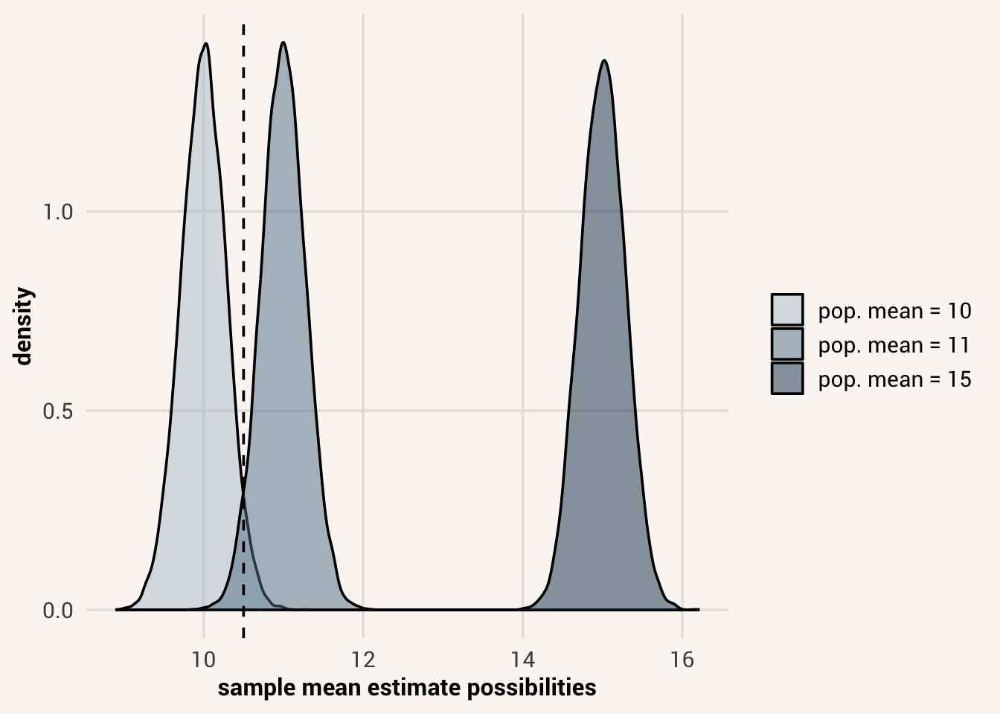
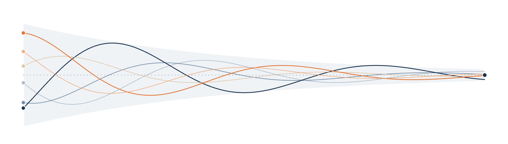
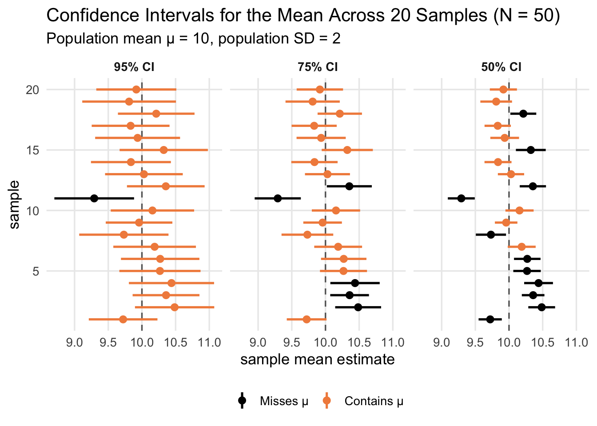

15 Effect Estimation

Last chapter we began discussing how we derive statistical insights about not only one sample of data, but about the wider population that our sample came from. We do this through inference - the process of reasoning about what population distribution our data likely came from, and thus what population value our sample statistic is an estimate of.
There are different reasons you might have for doing this inference process. One common motivation is to get a clear picture of what the value of an estimand is in the population (e.g. a population summary parameter or data generation process component). This is valuable for making decisions based on data. If you were voting on whether to raise sales tax in order to fund low-income housing programs, it would be helpful to know if your higher tax rate was likely to help 10 people vs. 1,000 people. If you were evaluating whether taking some medication with side effects was worth it, it would be helpful to know just how bad the side effects will be, and how likely the medication is to cure you.
Analyzing data can inform such decisions. Specifically, after choosing an estimand we are interested in, we can calculate an estimate for it in a data sample and use that estimate to inform our beliefs about the value of the estimand. This process is called estimation.
estimation = the process of using sample data to make a guess about a population value
For our sample-based estimates to be most useful to us, we have to be careful about the way we calculate them and interpret them. Samples provide more or less imperfect estimations of the population, so we want to find not only the best estimate that we can, but we also want to communicate just how confident in that estimate we can be given the sample evidence we have. In addition, we want to communicate this information in a way that is easier to understand and use for these practical purposes. In this chapter, we will discuss how to do this.
15.1 Effect sizes
Let’s consider yet another research scenario for this lesson. Let’s imagine we are personality researchers, and we are studying the extent to which people’s personalities influence their life experiences. In a paper published in the journal Psychological Science in 2019, psychologist Christopher Soto collected data on this question from several thousand people. He asked them to fill out a standard personality test called the Big Five, which measures people’s self-reported levels of extraversion, agreeableness, conscientiousness, negative emotionality / neuroticism, and open-mindedness. He then asked participants to fill out a subset of questions about life outcomes such as work success, social relationships, and behavioral proclivities. You can read the paper or the data repository for more information on the research.
In this example, let’s investigate a proposed data generation process where someone’s personality affects their behavior at work. Specifically, from a practical perspective, it may be valuable to know if particular sorts of people are likely to be better leaders. If you are a hiring manager and considering some potential candidates for an important leadership position in your organization, you’d like to know what information about the applicants will predict their leadership tendencies and how important that information is for influencing leadership.
With such a research goal in mind, let’s fit a statistical model on these variables in the dataset and see if we can learn how impactful personality is on leadership tendencies. The below code will load in the data file, filter it to just the people asked about work outcomes, and then fit an OLS statistical model of a proposed data generation process where extraversion and conscientiousness separately and linearly influence the typical level of leadership behavior.
Do you remember what these numbers mean? For a refresher (Chapter 12), \(\beta_0\) (1.70) is the average leadership behavior for people with 0 extraversion and 0 conscientiousness. Meanwhile, \(\beta_1\) (0.49) is the change in average leadership behavior for a 1-unit increase in extraversion while controlling for conscientiousness. \(\beta_2\) (0.06) is the change in average leadership behavior for a 1-unit increase in conscientiousness while controlling for extraversion. These are the numbers we’d plug into a prediction equation \(\mu_i = \beta_0 + \beta_1X_{1i} + \beta_2X_{2i}\). However, because we are estimating these coefficients in just a sample of data, let’s actually write the prediction equation as \(\hat{\mu_i} = \hat{\beta_0} + \hat{\beta_1}X_{1i} + \hat{\beta_2}X_{2i}\) to keep it clear that these are guesses about the population coefficient values, assuming this data generation process is correct.
We can interpret what these estimates tell us about the importance of extraversion and conscientiousness for creating leadership behavior by looking at the size of the coefficient values. Leadership is an average score of eight Likert survey questions assessing the extent to which a survey respondent exhibits various leadership behaviors. Response options for each question range from 1 = not at all to 5 = frequently if not always. Extraversion and Conscientiousness are also average scores of twelve Likert survey questions each, assessing the extent to which extraverted or conscientious behaviors are characteristic of the respondent (1-5 range).
Given this description and the coefficient estimates, it seems like at least extraversion is an influential factor in leadership. There’s a ~10% increase in average leadership score for a 1-unit increase in extraversion. Meanwhile, there’s only a ~1% increase in average leadership score for a 1-unit increase in conscientiousness. The unique effect of extraversion seems stronger, given these estimates from the data.
Alternatively, we could be interested in how much the variance in leadership scores is explained by these personality factors. The expected leadership scores of these specific candidates might vary, but in general how useful is this information for making accurate predictions? Should we keep it as part of the interview process?
For this question, we can look at the \(R^2\) value of the model:
This value indicates that about 20% of the variance in leadership scores is explained by all the personality information we collected. Compared to when we don’t know someone’s personality, knowing their extraversion and conscientiousness makes our guesses about their leadership scores 20% better. But if we look at the \(R^2\) scores associated with each explanatory variable on their own:
It looks like extraversion can achieve basically the same prediction performance on its own. The \(\Delta R^2\) associated with adding that to the model is \(R_{model}^2 - R_{c-model}^2 = 0.204 - 0.057 = 0.147\), while the \(\Delta R^2\) associated with adding conscientiousness to the model is \(R_{model}^2 - R_{e-model}^2 = 0.204 - 0.202 = 0.002\). Including conscientiousness in the model when we’ve already taken extraversion into account doesn’t really help our leadership predictions at all. So maybe it would be better to make our interview process shorter and remove questions about that personality trait, while only assessing extraversion.
What we’ve been doing throughout this example is reasoning about the magnitude of estimates from a statistical model. We reasoned not just about whether they are positive or negative, but about how big they are and how much of an impact that magnitude has on the decisions we need to make.
Thinking about the magnitude of a statistical estimate is thinking about its effect size. For any estimand that can be quantified and assigned an estimate, that estimate will have a magnitude and thus an effect size.
effect size = the numeric magnitude of a statistical estimate
Reasoning about an estimate’s effect size helps us think about the practical significance or importance of the estimand in the overall system we are studying. How much does this number impact our decisions? When we looked at the \(\beta_1\) estimate in model, we thought about how much a 1-unit change in extraversion shifts our expectations about leadership, and thus how much we should pay attention to that explanatory variable. When we looked at how much extraversion vs. conscientiousness explains variance in leadership, we considered how much explanatory power each variable had relative to the amount of time it takes to assess, and if it is worth measuring that variable. In each of these cases, we used the effect size of the estimate to inform the decisions we made based on data.
15.2 Estimation error vs. bias
While the effect size of a statistical estimate is useful for making decisions, we have to be careful that the number we estimate is not misleading.
We know from our discussion in Chapter 14 that an estimate we calculate in a sample will not be exactly the same as the population value for our estimand of interest. This is because of sampling error - a sample will have some random variation that makes it look different than the population distribution, and thus the estimate we calculate may be off a bit by chance.
This is the case for us in our personality and leadership example. Our sample has 747 people with complete personality and leadership information, which is a lot but is not the whole population of all people who work. So our estimate for the partial effect of extraversion on leadership behavior - \(\beta_1 = 0.48\) - is probably not exactly right for the true effect in the population. This is known as estimation error. Sampling error (the sample distribution not matching the population distribution) produces estimation error (the sample estimate not matching the population parameter). If we were to collect many replication samples and calculate an estimate in each, the distribution of these estimates would be a a sampling distribution with a non-zero standard error.
estimation error = when estimates from repeated samples deviate from the true population value
How much our estimate is likely to deviate from the population value depends on things like sample size, measurement error, and how complicated the estimate is. We can use that information to figure out the likely standard error of the sampling distribution. The standard error itself is another estimate from our sample, since we can’t see the whole sampling distribution. We won’t go into the algorithms for estimating standard error in this book because they are different and potentially complicated depending on what estimand estimator we are talking about, but we can get the estimated standard error with various code functions. For instance, the full output of summary(model) will give you the standard error of the model coefficients as well as the coefficient estimates:
Standard error tells us how much we should expect sample estimates to vary sample to sample. But for any one estimate we get from one specific sample (usually the case we are in, when we run just one research study), we don’t know whether it will be above or below the population parameter, less than one standard error away, more than one, etc. So instead, all we can say is that this one estimate is our best guess of the value of the estimand. If our estimand is the partial effect of extraversion on leadership, we use \(b_1\) fitted in this sample as the estimate \(\hat{\beta_1}\). We acknowledge that we will probably be wrong by some amount; there will be error in our guess of the estimand, so probably \(\hat{\beta_1} \neq \beta_1\).
Yet, despite this error, we don’t want there to be any systematic difference between \(\hat{\beta_1}\) and \(\beta_1\). In other words, even when \(\hat{\beta_1} \neq \beta_1\), we want \(\hat{\beta_1}\) to be just as likely to be too high as it is to be too low over repeated samples. If there is systematic deviation, such as usually calculating a \(\hat{\beta_1}\) that is too large, that is called estimation bias.
estimation bias = when estimates from repeated samples deviate from the true population value in a systematic way.
Having a lot of estimation error can be a problem because it makes it harder to eliminate possibilities for the population parameter. When some sampling process can produce many different estimates from the same population parameter, many population parameters could have produced a particular sample estimate using the same process.
But estimation bias is a potentially worse situation - it means we might eliminate the wrong population parameter, leading to an incorrect conclusion. When we decide based on our model estimation that extraversion is a valuable explanatory variable of leadership, we might sometimes estimate the strength of that estimate as a bit higher or low. But if our sampling and estimation process lead us to e.g. consistently overestimate how important extraversion is, maybe our interview process will be flawed - we will spend time collecting information about extraversion and make decisions based on that when we could have gotten an even better candidate if our estimation hadn’t been biased.
15.2.1 Bias due to sampling
Bias in estimates over repeated samples can come from a variety of issues in our statistical workflow. First, it might come from how we collected our data sample.
Last chapter we mentioned that a random sampling process leads to the most representative sample of the population. Yet, in reality, it is difficult to use totally random sampling when you don’t have equal access to the whole population. Something like convenience sampling is more common. But if your sampling process doesn’t create samples like the population, the estimates derived from those samples may also systematically vary from the population estimand value.
Here’s a simulation demonstrating this fact. First, we’ll see a situation we have simulated before - a sampling distribution of correlation estimates we might get between x and y over repeated random samples from a population where the true correlation is 0.6.
In this image the vertical dashed line is the mean of the sampling distribution. As expected, there is estimation error due to sampling error, so we get sample estimates that vary around the true population value. But they’re centered around the true value 0.6, so over repeated samples our estimates are unbiased.
However, now consider a situation where not everyone is as likely to end up in the sample. For instance, let’s imagine that people with a negative x value are less likely to be recruited. Perhaps something about that variable not only influences y, but also their willingness to take part in a research study (e.g. SES affecting time availability, personality affecting value placed on science, etc.).
To incorporate this into the simulation, we will recruit until we hit 500 people, but not everyone who could be potentially recruited will actually enter a sample.
Now, our sampling distribution is not centered on the true population correlation, but on 0.55 instead. This means more often than not, our samples are underestimating the true population correlation. This is because certain people from the population were less likely to be present in our sample compared to others. When estimation bias occurs because of how the sample was collected, that is called sampling bias.
sampling bias = bias in statistical estimates that are due to collection of unrepresentative samples
Now, non-random sampling doesn’t always bias an estimate of interest. It did so in this case because x was a variable that influences the estimate we get and also influenced the chance of being sampled. But here is an alternative simulation where some other variable z is what influences the chance of being sampled, but is independent of x and y and thus doesn’t affect the estimate of \(cor(X,Y)\).
In this simulation, our estimates of \(cor(X,Y)\) are unbiased again. This is because, while z influenced the chance of recruitment, it didn’t influence what values of x and y were available to calculate the correlation on.
Bringing this abstract idea into our research reality, it is very hard to recruit a truly random sample. There will always be people who are more or less likely to participate in your research because ethically we can’t force anyone to. It is also difficult to access all possible demographics in our population of interest, such as different cultures and ages. Having few to no people of a certain culture may bias your effect estimates if that cultural identity influences the chance of being recruited and the value of some variable needed for your estimand of interest.
But just because a sample doesn’t have all possible cultures in it doesn’t necessarily mean your estimate will be biased. If culture has no bearing of the variables you are studying, then an unrepresentative distribution of culture in your sample doesn’t mean the distribution of your other variables will be unrepresentative. You have to consider this full web of possibilities when designing your research study in order to maximize your chance of getting an unbiased statistical estimate.
15.2.2 Bias due to measurement error
Even if your sample is representative on all the variables that matter, we can still get biased estimates if there is measurement error in those variables.
In research, we are often interested in relationships between latent constructs that we cannot observe directly. Instead, we use measurements of those characteristics, such as questionnaire responses, test scores, or observations of behavior. If those measurements are imperfect, the associations we estimate from them won’t accurately represent the relationships between the latent constructs.
Specifically, our estimated effect sizes of associations between variables will be biased downwards if there is measurement error in the variables. This is because the actual value of an observation comes more from noise than it does the latent construct if there is a lot of measurement error. When the observations contain less information about the latent construct, then the things that influence the latent construct have less influence on the value of the observation - just as it is harder to understand the dialogue on a tv show when the room you’re in is noisy vs. quiet.
Again, we can see this through simulation. In the last section we already saw the sampling distribution of a correlation that comes from N=50 samples when the population correlation is 0.6. But in that simulation, we assumed that x and y were measured without error. What happens if the latent variables x and y are correlated at 0.6, but we can only measure them with error?
Not only is the standard error of this sampling distribution higher due to the measurement error, the mean of the sampling distribution is biased lower.
In this simulation there wasn’t all that much measurement error; the standard deviation of the latent conditional y values was 0.6, while the standard deviation of the noise was 0.4. But things get even worse if more of the variation in the observations is due to noise than it is due to true latent variation:
In this case, we are barely able to estimate an association at all between x_meas and y_meas, even though the strength of the association between x and y is quite strong.
15.2.3 Bias due to model misspecification
You can also get a biased estimate of some part of a data generation process if you misspecify your model. Recall from Chapter 13 the ways our idea of a data generation process can be misspecified: we could be assuming the wrong association form, the wrong set of explanatory variables, the wrong observation model parameter or family, etc.
When you misspecify your model relative to the true data generation process, the model fitting algorithms will still calculate coefficient estimates that maximize the likelihood of the data given the specified model form. But if the model form is wrong, than those coefficient values might be wildly off.
For example, here’s a simulation of the sampling distribution for the estimate of the effect of some variable IV on DV. The true effect of IV on DV is a non-linear process \(\mu_i = 0.5log(X_{i})\), but we’ll model it with a linear prediction equation \(\mu_i = \beta_0 + \beta_1X_{i}\).
The true effect of x on y in the population is 0.5, because that’s how y values were created in the simulation. But if we try to find the best fitting straight line for this relationship, we get a biased average estimate of about 0.185.
Another common source of model misspecification is not including the right explanatory variables. Imagine a situation where some variable Z causes both the variable X and the variable Y, but you ignore that part of the data generation process. Instead, you propose that X causes Y itself. Here’s what happens if we implement that model misspecification:
Here, the actual effect of X on Y in the population is 0 - Y is only influenced by the value of Z. But since Z also influences X, there is some information about Z that is present in X. Thus, there is a statistical association between X and Y in these data - we get an average effect estimate of about 0.35. But the association is not causal. If we were to use this value as the estimate for the causal effect of X and Y, we’d be very biased.
In order to get the unbiased estimate of the effect of X on Y, we’d want to include additional explanatory variables in the model that might better explain the variance in Y. Only if there is still a partial effect of X on Y after controlling for all potential confounds can we get an unbiased estimate of the causal effect of X on Y.
Checking model fit diagnostics like we did in Chapter 13 can help with checking for various types of model misspecification. If a model does not fit data well, the estimates in the model will likely be biased and we don’t want to rely on them. Instead, we should fit a different idea of a data generation process. But this fit checking procedure isn’t fool proof. One should also think critically about all the data generation mechanism pieces that a model implies, and make sure those are defensible based on your domain expertise. A lot scientific debate focuses on how exactly to specify a data generation process and get unbiased estimates.
15.2.4 Bias due to estimate calculation
Finally, even if your sample is representative and your model is correctly specified, bias can occur in the way our estimator computes the estimate.
Previously we’ve seen that calculating the mean of a variable in a sample creates unbiased estimates of the true population mean. We saw this was so in simulations, since the estimates from several samples varied evenly around the true population value.
By calculating the mean of the sample in the way that the mean() function does - by adding up all the sample observations and dividing by N - we get unbiased estimates of the population mean. For this reason, we can consider the estimator \(\frac{\sum{x}} {\bar{x}}\) to be an unbiased estimator.
For the most part, we have taught unbiased estimators in this book. But sometimes those estimators seemed complicated to calculate, or the calculation didn’t quite match the conceptual description paired with it. For instance, in Chapter 5 we first learned to think about the standard deviation as the typical amount of deviation that any one observation will be from the distribution mean. But that description implies an estimator like \(\sqrt{\frac{\sum_{i=1}^{n} (x_i-\bar{x})^2}{n}}\). Instead, we learned the estimator \(\sqrt{\frac{\sum_{i=1}^{n} (x_i-\bar{x})^2}{n-1}}\), where the sum of squares is divided by \(n-1\) instead of just \(n\).
The reason for this is because, if we calculate the normal average of squared deviations as an estimate of the population variance and standard deviation, we will systematically underestimate the population standard deviation. Here’s a demonstration:
The bias isn’t huge in this case, but it’s there. Our sample estimates vary around 1.97 instead of 2. Alternatively, if we divide by \(n-1\) in the estimator:
Our sample estimates now vary around a population standard deviation of 2 like they should. For this reason, the formula we learned for the standard deviation was the unbiased estimator. This is the formula that R’s sd() function implements.
Likewise, in Chapter 11 we learned to calculate the typical prediction error in a statistical model, RSE, as \(\sqrt{\frac{\sum_{i=1}^{n} (Y_i - \hat{Y}_i)^2}{n-k-1}}\) where \(k\) is the number of coefficients in the prediction equation. We learned this, instead of dividing the sum of squared errors by N, in order to make the RSE estimator unbiased.
Note
These corrections we’re dividing by, \(n-1\) and \(n-k\), are known as the degrees of freedom instead of the sample size. If you see references to degrees of freedom in research reports or software outputs, this bias-correction term in the estimator is what those are referring to.
Another estimator we didn’t learn about yet, but should at this point, is the adjusted \(R^2\). We learned in Chapter 11 that to calculate the \(R^2\) of a model, we compute \(1 - \frac{SSError}{SSTotal}\). This estimator is just fine if we have one explanatory variable in the equation. But the more explanatory variables we add, the more biased this estimator becomes. This is because \(R^2\) never decreases, even if we add complete non-sensical explanatory variables to the model. Instead, the model fits these coefficients to explain little deviations due to measurement error. If a model is overfit with a lot of explanatory variables, the raw \(R^2\) estimate will overestimate the true amount of variance that the explanatory variables can explain in the population.
adjusted \(R^2\) = a different way of calculating \(R^2\) for a statistical model that reduces estimation bias; it uses mean squared error in the calculation instead of sum of squared error
To address this bias in the \(R^2\) estimator, many people prefer to report adjusted \(R^2\). This uses mean squared error (MSE) in estimator instead of sum of squared error (SSE), since MSE is divided by \(n-k-1\) to correct for bias:
\[adj R^2 = 1 - \frac{MSError}{MSTotal}\]
We can see both raw and adjusted \(R^2\) values in the summary(model) output:
Since \(adjR^2\) takes out the bias due to including many potentially pointless explanatory variables, Using \(adjR^2\) instead of \(R^2\) as your estimate of target variance explained by the explanatory variable(s) allows you to directly compare the prediction performance of models with different numbers of explanatory variables.
15.3 Estimation uncertainty
We should always endeavor to estimate, intepret, and report unbiased estimates of our estimand. But just focusing on this one estimate number can give the false impression that we’re really confident in this estimate. However, remember that our one estimate is possible to be produced by different population values. So if we’re using a sample statistic as an estimate for the population estimand, we might say our best guess of the population estimand value is the same as the estimate value. But we probably also want to say that other population values are under consideration as well. In other words, we want to report not just our sample estimate, but our level of uncertainty about that estimate.
A common way to do this is to estimate a range from our sample instead of one point prediction. This range is calculated from the range of population values that our sample estimate has a high enough likelihood under. We already saw last chapter that, for a sample size such as 50, it’s reasonable to expect to get a sample mean estimate like 10.5 when the population is 10 or 11, but it would be really surprising to see this estimate come from a population mean like 15.
Thus, given we’ve collected and calculated a sample mean of 10.5, we’d like a way to express some range of population values that are most likely to have created this estimate. This range should go from the lowest population value we are willing to entertain up to the highest population value.
Enter the confidence interval. A confidence interval is a range of values that, when calculated in repeated samples, will contain the true population parameter a certain percentage of the time. It is calculated using the effect estimate as well as the estimate of the standard error. For instance, a 95% confidence interval is calculated as:
confidence interval =
\[CI_{95} = \hat{\theta} \pm 1.96*\hat{SE_{\theta}}\]
Where \(\hat{\theta}\) stands in for some estimate you are focused on and \(SE_{\theta}\) is the estimated standard error of \(\theta\). The 1.96 comes from the fact that 95% of a distribution will fall within approximately 2 standard deviations of the distribution mean (it’s 1.96 to be precise). Writing our equation this way essentially says we think that it is reasonable to expect an estimate \(\hat{\theta}\) to come from a population value \(\theta\) if that estimate is within 2 standard errors of the sampling distribution for \(\theta\). Thus, all possibilities of \(\theta\) where \(\hat{\theta}\) is within 2 standard errors should be a part of our confidence interval.
Note that the confidence interval is calculated only from our sample, not from the population. So the confidence interval isn’t actually guaranteed to contain the true population value if our estimate happens to be very unlikely and weird. If we want to be right about the confidence interval more often regardless of how weird our point estimate might be, we can make it wider - for instance, calculate a 99% confidence interval instead of a 95% confidence interval. Doing this means the true population parameter will be in the interval for 99/100 samples we collect. The downside though is, now that the estimate is wider, we are eliminating fewer population value possibilities and expressing less confidence in what our estimate is. If we would make difference decisions based on different population values, being unable to reject as many parameter possibilities could make it harder to choose a decision.

Again, many functions exist to help us find confidence intervals so that we don’t have to hand calculate them. To get them for coefficients within a fitted model, we can pass a model object to the confint() function along with a level of confidence we’d like to use:
For confidence intervals around predictions make using a statistical model, the predictions() function from marginaleffects also returns this information. You can control the level of the calculated confidence interval with the optional argument conf_level=.
Unfortunately, the logic of a confidence interval is rather convoluted. It is one of the most misunderstood tools in all of statistics. We need to remember that a confidence interval is a range that will contain the true population parameter X% of the time across many samples. There is a certain probability \(P(\hat{\theta} | \theta)\) that we will create this estimate given an unknown population value. But once we actually have a data sample and calculate the estimate, it either contains the population value, or it does not. Thus, here are a few common ways confidence intervals are misinterpreted, and what we should think instead:
A 95% confidence interval is not the interval in which 95% of the data values can be found. That is the prediction interval that we learned about in Chapter 13. A confidence interval is a summary statistic itself. Just as the mean of a sample doesn’t tell you what all the possible values in the sample are, a confidence interval doesn’t tell you about what will occur for individual observations, only overall sample estimates.
A 95% confidence interval is not the interval in which you will find 95% of other sample estimates. A confidence interval is calculated from and centered on one sample estimate. That one sample estimate is likely to be higher or lower than the true population mean, meaning more that 5% of future estimates will fall outside of it. You can imagine calculating a 95% confidence interval on an outlier estimate, in which case almost no other estimates will fall within the range.
A 95% confidence interval does not say there is a 95% probability the population value is in this range. This is a nuanced one, but remember \(P(\hat{\theta} | \theta) \neq P(\theta | \hat{\theta})\). Also, under a Frequentist definition of probability, the population value cannot even have a probability because it doesn’t vary. 95% refers to the proportion of intervals we could randomly draw from a set population value. It does not refer to any property of the population value itself.
Focus on width of interval instead. Since it’s built out of the standard error, tells you how precise your estimate can be.
Note
Confidence intervals at the moment are pretty standard to report along with sample estimates. However, because of the complications of interpreting confidence intervals and how often they’re misused, some people argue that we should do away with them and use other tools that more closely represent the inferences we want to make, such as Bayesian credible intervals giving us the probability of the population parameter. This author agrees, but these are more difficult to compute and for now are less common. For this reason, this chapter still teaches confidence intervals. But be very careful about interpreting them!
15.4 Clearly communicating effect estimates
If we are to make decisions based on statistical estimates, or inform others’ decisions, we need to make sure we communicate the correct interpretation of our estimates. In a research article it is common to report the results of statistical analyses as a big table of coefficient estimates, standard error estimates, and confidence intervals, but what one should do with this information is not always clear. For this reason, it is valuable to keep in mind some reporting possibilities that make effect interpretation easier.